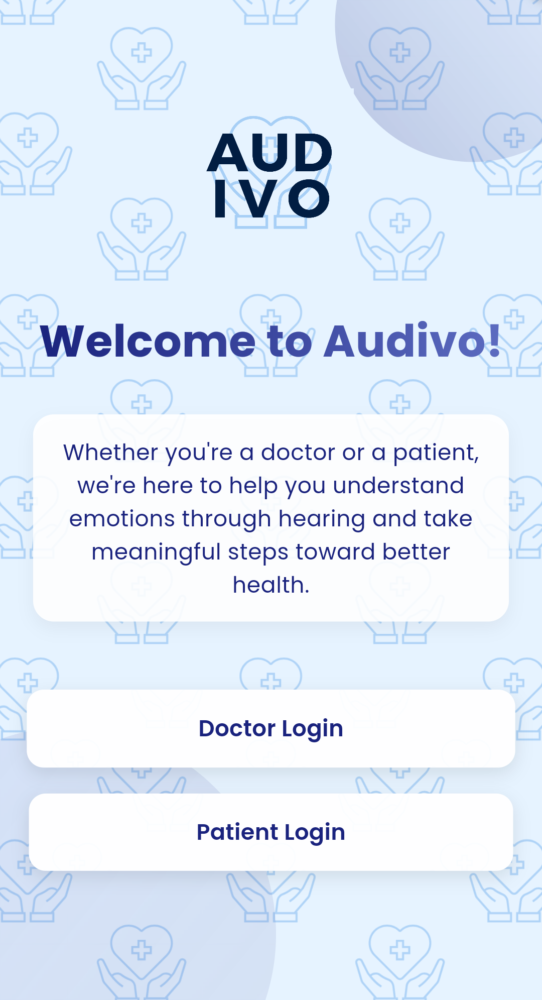

Ses ve Görüntüden Duygu Tanıma
Ses kayıtları ve video görüntüleri üzerinden duygu durumu tespiti yapan sağlık platformu
Doktorlar İçin
Hastalarınızın duygu durumlarını ses ve görüntü testleriyle analiz edin
Hastalar İçin
Duygu durumunuzu düzenli testlerle takip edin

Ses Tespiti
Görüntü Tespiti
Durum Takibi
Neler Sunuyoruz?
Audivo ile duygu analizi artık çok daha kolay
Ses Testi
Ses kayıtları üzerinden kapsamlı duygu analizi
Video Testi
Görüntü tabanlı detaylı duygu analizi
Maskeli Video Testi
Maske kullanımında bile doğru duygu analizi
Analiz Grafikleri
Detaylı test sonuçları ve interaktif görselleştirmeler
Hasta Yönetimi
Kolay hasta ekleme ve gelişmiş takip sistemi
Not Sistemi
Hasta notları ve detaylı takip kayıtları
Nasıl Çalışır?
Ses ve görüntü üzerinden duygu tanıma süreci
Doktorlar İçin
- Hasta kaydı oluşturma
- Ses veya görüntü testi uygulama
- Duygu durumu tespiti
- Test sonuçlarını karşılaştırma
- Gelişim sürecini takip etme
Hastalar İçin
- Kolay test uygulaması
- Anlık duygu durumu tespiti
- Düzenli durum takibi
- Gelişim grafiklerini görüntüleme
Uygulama Arayüzü
Modern ve kullanıcı dostu tasarım


Bize Ulaşın
Sorularınız için form doldurabilir veya sosyal medyadan ulaşabilirsiniz